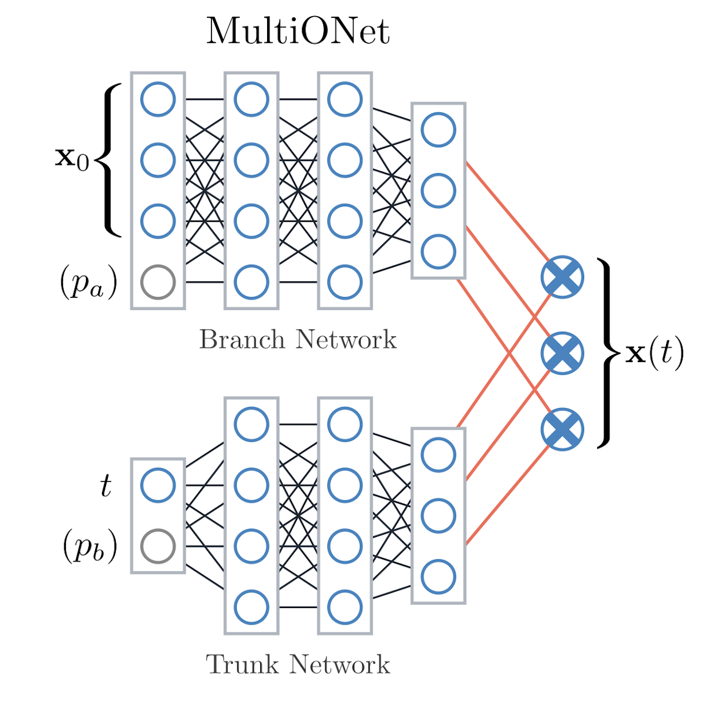
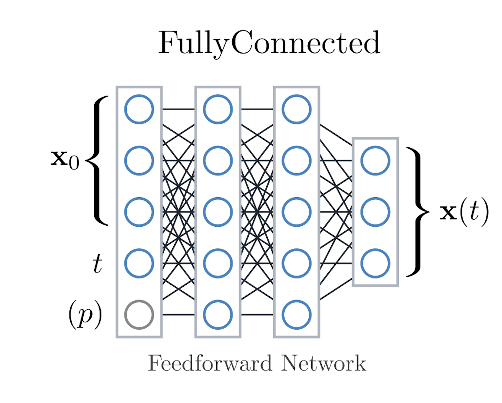
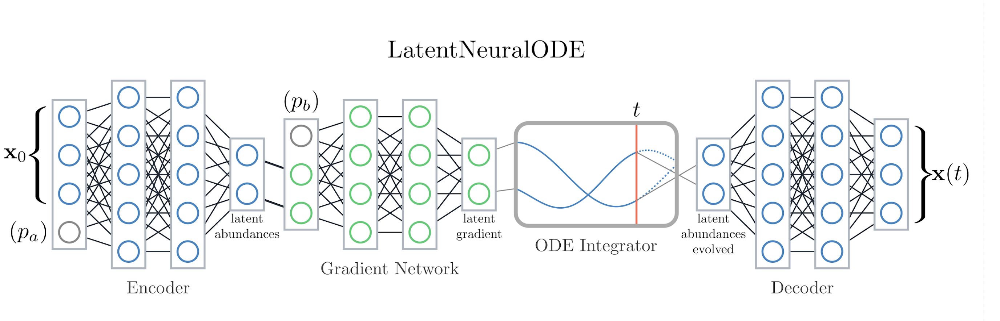
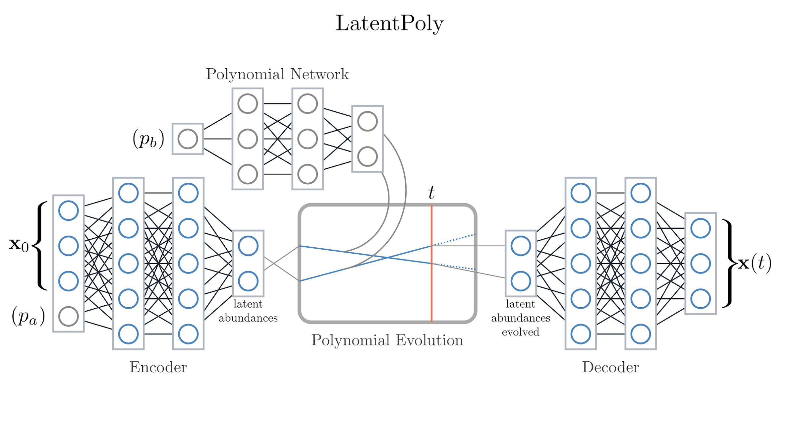

Baseline Architectures#
CODES ships with four surrogate families. Each lives under codes/surrogates/ with a dedicated config dataclass (*_config.py). This page summarizes their design so you know which model to pick or extend.
All four share the same AbstractSurrogateModel interface: they receive (initial state, desired time, optional parameters) and emit the predicted state at that time. Training data are sampled at predefined timesteps, but each architecture treats time as a continuous input so you can query any point within the training horizon. Timesteps are defined per dataset but otherwise flexible, they can be equispaced, logarithmic, or irregular. They are always normalized to [0, 1] before feeding into the models.
MultiONet (DeepONet variant)#
Files:
codes/surrogates/DeepONet/deeponet.py, configdeeponet_config.py.Idea: Operator network with a branch net (ingests state + fixed parameters) and a trunk net (ingests timesteps). Their outputs form an inner product that predicts the next state.
Key knobs:
hidden_size, number of branch/trunk layers,output_factor, activation function, loss choice (MSEorSmoothL1), and optimizer/scheduler inherited fromAbstractSurrogateBaseConfig. Optional parameter routing lets you feed physical parameters either into the branch (state) or trunk (time) network.When to use: Strong baseline for irregular sampling and parametric tasks because branch/trunk inputs can be customized via
prepare_data.

MultiONet splits inputs across branch (state) and trunk (time) networks before combining them.#
FullyConnected (FCNN)#
Files:
codes/surrogates/FCNN/fcnn.py, configfcnn_config.py.Idea: Classic multilayer perceptron that flattens the trajectory context and predicts the next timestep. Parameters are simply concatenated to the inputs, keeping the architecture bias-free.
Key knobs:
num_hidden_layers,hidden_size, activation, dropout, and optimizer settings from the base config.When to use: Fast baseline for small- to medium-scale datasets; useful sanity check before moving to heavier models.

FCNN consumes the initial state, desired time, and optional parameters with a single fully connected stack.#
Residual variants#
Classes:
MultiONetResidualandFullyConnectedResidual, defined next to their parents in the same files.Idea: The network output is added to the initial state, so the model learns only the change from the input:
x(t) = x(0) + f(x(0), t). Architecture and hyperparameters are those of the parent.Configs: Without a dataclass of their own in
surrogates_config.py, they use the parent’s (MultiONetConfig,FullyConnectedConfig).When to use: Datasets where states change little over a step, and autoregressive use, where the model is fed its own predictions (see :doc:
finetuning).
LatentNeuralODE#
Files:
codes/surrogates/LatentNeuralODE/latent_neural_ode.py, configlatent_neural_ode_config.py.Idea: Encodes sequences into a latent space, integrates dynamics via a neural ODE block, then decodes back to the observable state.
Key knobs: Encoder/decoder depth/width, latent dimensionality, ODE solver depth (
ode_layers) and width, activation choice, KL weighting, and rollout horizon. Parameters can enter via the encoder (concatenated with abundances) or as inputs to the gradient network, influencing latent dynamics rather than the encoding itself.When to use: Long-horizon forecasting or scenarios where latent dynamics better capture system behavior than direct mapping.

LatentNeuralODE encodes trajectories, integrates the latent dynamics, and decodes back to observables.#
LatentPolynomial (LatentPoly)#
Files:
codes/surrogates/LatentPolynomial/latent_poly.py, configlatent_poly_config.py.Idea: Encodes trajectories into a latent state, fits polynomial dynamics in that space, and decodes to observations. Trades expressiveness for analytic structure.
Key knobs: Polynomial degree, latent feature count, encoder/decoder layer counts and widths, activation, and regularization.
When to use: Systems known to follow low-order polynomial dynamics or when interpretability of the latent dynamics matters. Parameters can optionally drive a dedicated “polynomial network” that predicts the coefficients used during latent evolution.

LatentPoly learns parameter-aware polynomial coefficients that evolve the latent state.#
Working with configs#
Each surrogate has a config dataclass inheriting from
AbstractSurrogateBaseConfig. Shared fields include learning rate, optimizer (adamw/sgd), scheduler (cosine,poly,schedulefree), activation, and loss definition.Dataset-specific defaults live in
datasets/<name>/surrogates_config.py. Whendataset.use_optimal_params: true, CODES loads the corresponding dataclass and merges it with any overrides fromconfig.yaml. A surrogate that subclasses another one falls back to its parent’s dataclass when it has none of its own.During tuning you reference config fields by name inside
optuna_paramsso the sampled values get injected before training. Optional architectural variants (e.g., parameter routing choices) are exposed as categorical hyperparameters so studies can discover the best scheme per dataset.
If you introduce a new surrogate, follow the same pattern: codes/surrogates/<Name>/, config dataclass, and an entry in the docs so downstream users know how to configure it.